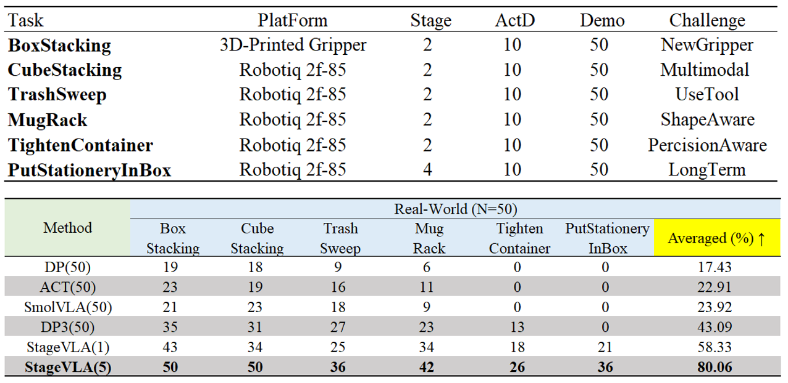
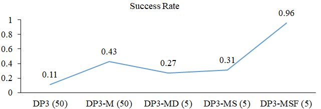
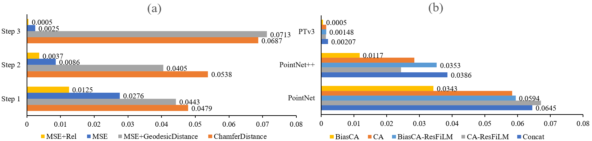

Simulation Experiments
We evaluate StageVLA in CoppeliaSim and IsaacSim using a Franka Panda robot, leveraging calibrated RGB-D inputs projected into world-frame point clouds. Our benchmark comprises six challenging tasks varying in viewpoint, fidelity, stage count, manipulation type, and geometric complexity, with each task assessed over 100 trials based on 200 expert demonstrations. Compared to representative 2D (DP, ACT), 3D (DP3), and vision-language (SmolVLA) baselines, StageVLA achieves a superior average success rate of 96.17%, demonstrating robust generalization across all tested dimensions.

Table 1: Results on RLBench.
Task & Source Demonstrations
Sim-CubeStacking
MugStacking
PutMugMicrowave
CloseLaptopLid
PutMoneySafe
PushButton
Real-World Experiments
We conduct real-robot experiments to further verify our model's performance. A total of 6 manipulation tasks are evaluated, covering a spectrum from simple pick-and-place to long-horizon behaviors such as opening a box and placing object inside.

Table 1: Results on RLBench.
Task & Source Demonstrations
BoxStacking
CubeStacking
TrashSweep
MugRack
TightenContainer
PutStationeryBox
Results
We further evaluate generalization under seven conditions: in-distribution, gripper replacement, dark lighting, background variation, height variation , random disturbances, and visual distractors. In addition to the full model, we compare against SmolVLA and DP3, the strongest baselines, The results are shown in Fig. 9. StageVLA outperforms both baselines in all settings, and maintains high robustness under diverse distractors.

Figure 9: Real-robot setup and results.
Evaluation Videos
BoxStacking
CubeStacking
TrashSweep
MugRack
TightenContainer
PutStationeryBox
Ablation Study
We conduct four ablation studies to validate the key design choices of StageVLA, including interaction modeling, loss formulation, point cloud backbone and fusion strategy, and the effectiveness of StageGen.

Table 1: Ablation study on DP3-MSF components.
To evaluate the efficacy of each component in DP3-MSF, we conduct an incremental ablation study starting from the base DP3 model. We define four variants: (M) utilizing object-masked point clouds; (D) and (S) trained exclusively on full or interaction-only synthetic trajectories, respectively; and (F) removing the State MLP branch (State-Free). All other variants are trained on a limited set of 50 expert demonstrations. Experiments focus on the CubeStacking task, decomposed into Pick and Place atomic skills. We report the average success rate over 100 trials (50 per skill) , where both robot initial poses and object configurations are randomly perturbed to simulate phase-transition noise and prevent trajectory replay.

Table 1: Ablation study on point cloud backbones and fusion strategies.
(a) Loss Function Analysis. We benchmark SAVG loss variants using pose MSE (XYZ + Rot6D) on an augmented test set. Candidates include: (1) Chamfer Distance on point clouds; (2) MSE + Geodesic Distance; (3) Pure Pose MSE; and (4) MSE + Relative Auxiliary Loss (Rel), which enforces consistency via iterative feedback of transformed predictions. To assess the learning of relative transformations, evaluation employs a three-step iterative refinement strategy. (b) Performance evaluation of different backbones. We evaluate three point cloud backbones (PointNet, Point- Net++, PointTransformerV3) and four fusion strategies (Con- cat, CA, ResFiLM, BiasCA).

Table 1: Impact of StageGen on data efficiency.
To evaluate data efficiency, we conduct experiments on CubeStacking with varying numbers of real demonstrations, comparing models trained with and without StageGen. For each real demonstration, StageGen generates 500 synthetic episodes. We then evaluate SAVG and DP-MF in terms of pose MSE over 20 held-out trials.
Failure Cases
Although our method outperforms baseline methods in the Category setting, its absolute success rate is not high. The largest degradation of StageVLA occurs under ex- treme lighting, due to LiDAR sensing and segmentation sensitivity